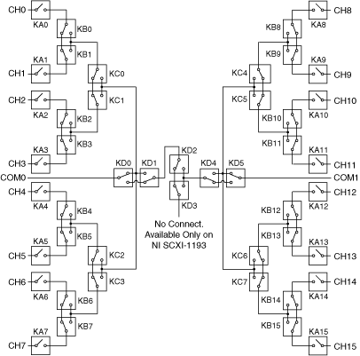

The NI PXI/PXIe-2593 (NI 2593) supports the independent topology, allowing you to utilize its full routing capabilities. Possible configurations include 3×1 multiplexers and dimensionally flexible sparse matrices.
Control the individual relays with the niSwitch Relay Control VI or the niSwitch_RelayControl function (refer to the NI 2593 hardware diagram for relay names). For example, to connect CH2 to COM0 on the NI 2593, call the niSwitch Relay Control VI or the niSwitch_RelayControl function with relay action set to Relay Closed and relay name set to KA0. Repeat the call to the niSwitch Relay Control VI or the niSwitch_RelayControl function to close KB1 then KC0.
When scanning the NI 2593, use the channel names in the scan list. A typical scan list entry could be ch2->com0;. This entry routes the signal connected to CH2 to COM0.
To determine the internal channel names, combine the names of all relays adjacent to a channel, in alphabetical order, and remove the K's. For example, the channel connecting KA0 and KB0 is called A0B0.
For example, to connect CH0 to COM0 using internal channel names, you need to call the following:
niSwitch_Connect (exampleSession, ch0, a0b0);
niSwitch_Connect (exampleSession, a0b0, b0b1c0);
niSwitch_Connect (exampleSession, b0b1c0, c0c1c2c3d0d1);
niSwitch_Connect (exampleSession, c0c1c2c3d0d1, com0);

The following is a list of the valid internal channel names:
| a0b0 | b0b1 | c0c1 | ch4 |
| a10b10 | b0b1c0 | c0c1c2c3d0d1 | ch5 |
| a11b11 | b10b11 | c2c3 | ch6 |
| a12b12 | b10b11c5 | c4c5 | ch7 |
| a13b13 | b12b13 | c4c5c6c7d4d5 | ch8 |
| a14b14 | b12b13c6 | c6c7 | ch9 |
| a15b15 | b14b15 | ch0 | com0 |
| a1b1 | b14b15c7 | ch10 | com1 |
| a2b2 | b2b3 | ch11 | d0d1 |
| a3b3 | b2b3c1 | ch12 | d1d2 |
| a4b4 | b4b5 | ch13 | d2d3 |
| a5b5 | b4b5c2 | ch14 | d2d3d4 |
| a6b6 | b6b7 | ch15 | d4d5 |
| a7b7 | b6b7c3 | ch1 | |
| a8b8 | b8b9 | ch2 | |
| a9b9 | b8b9c4 | ch3 |